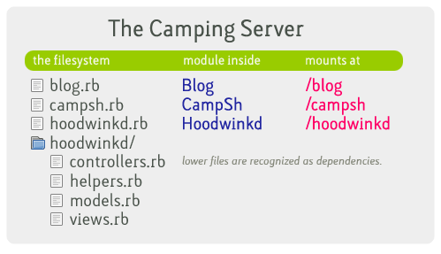

Generally, the idea is keep your app small and store in a single file. Your app will end up with four sections:
1. Camping setup
ruby do
require 'rubygems'
require 'camping'
Camping.goes :Blog
end2. Models
ruby do
module Blog::Models
class User < Base; end
class Post < Base; belongs_to :user end
end
end3. Controllers
ruby do
module Blog::Controllers
class Index < R '/'
def get; render :index end
end
end
end4. Views
ruby do
module Blog::Views
def layout
html { body { self << yield } }
end
def index
div.page "Welcome!"
end
end
end(Optional) You may choose to Give Us a `create’ Method.
If you’re piling up models and controllers, your file may begin to exceed 200 lines, which means lots of paging up and down. Go ahead and store your models, controllers and views in three separate files. Your directory structure should end up like this:
blog.rb
blog/
models.rb
controllers.rb
views.rb(Note, for the development reloading to work, your required files (models.rb etc.) must be in a subdirectory named after your app.)
Your blog.rb would still contain the setup (No. 1):
ruby do
require 'rubygems'
require 'camping'
Camping.goes :Blog
require 'blog/helpers' # if needed
require 'blog/models'
require 'blog/views'
require 'blog/controllers'
endRather than building huge Camping apps, the idea here is to write small apps which can each be mounted at directories on your web server. One restriction: these apps will share a database. However, this allows applications to access each other’s tables and simplifies setup and configuration.
The camping tool starts a web server which mounts apps in this fashion. If you want to mount all your apps, run camping apps/**/*.rb.
You’ll end up with:
In your app, if you’re using the R() method to build your links, Camping will make sure the mount is added properly to links.
For example, if R(View, 1) is used in the blogging app mounted at /blog, the link will be written as /blog/view/1. If later you mount the blog at /articles instead, Camping will write the link as /articles/view/1.
ruby do
def Blog.create
# Code in here will run when the app starts, or reloads, but not when requests happen.
# You can use it to create database bits and pieces, files, folders, and so on.
end
end
The Camping Server is basically a set of rules. At the very least, The Camping Server must:
Camping comes with a very simple version of The Camping Server. bin/camping uses either WEBrick or Mongrel (if you have it installed.)
Run it like this: camping /var/www/camping/*. It will follow all of the rules above.